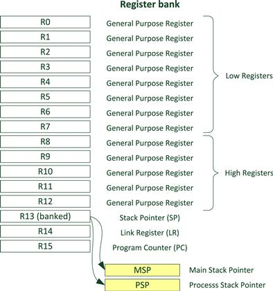

Lab 2 : Writing in Assembly
Seneca Polytechnic SEH500 Microprocessors and Computer Architecture
Introduction
Cortex-M4 Memory Map
The 4GB address space of the Cortex®-M processors is partitioned into a number of memory regions (Figure 2.1). The partitioning is based on typical usages so that different areas are designed to be used primarily for:
- Program code accesses (e.g., CODE region)
- Data accesses (e.g., SRAM region)
- Peripherals (e.g., Peripheral region)
- Processor’s internal control and debug components (e.g., Private Peripheral Bus)
The architecture also allows high flexibility to allow memory regions to be used for other purposes. For example, programs can be executed from the CODE as well as the SRAM region, and a microcontroller can also integrate SRAM blocks in CODE region.

Figure 2.1 Memory map
In practice, many microcontroller devices only use a small portion of each region for program flash, SRAM, and peripherals. Some of the regions can be unused. Different microcontrollers have different memory sizes and peripheral address locations. This information is usually outlined in user manuals or datasheets from microcontroller vendors.
Cortex-M4 Registers
The register bank in the Cortex-M3 and Cortex-M4 processors has 16 registers. Thirteen of them are general-purpose 32-bit registers, and the other three have special uses, as can be seen in Figure 2.2.

Figure 2.2 Registers in the register bank
R0 – R12
Registers R0 to R12 are general-purpose registers. The first eight (R0 – R7) are also called low registers. Due to the limited available space in the instruction set, many 16-bit instructions can only access the low registers. The high registers (R8 – R12) can be used with 32-bit instructions, and a few with 16-bit instructions, like MOV (move). The initial values of R0 to R12 are undefined.
R13, stack pointer (SP)
R13 is the Stack Pointer. It is used for accessing the stack memory via PUSH and POP operations.
R14, link register (LR)
R14 is also called the Link Register (LR). This is used for holding the return address when calling a function or subroutine. At the end of the function or subroutine, the program control can return to the calling program and resume by loading the value of LR into the Program Counter (PC). When a function or subroutine call is made, the value of LR is updated automatically. If a function needs to call another function or subroutine, it needs to save the value of LR in the stack first. Otherwise, the current value in LR will be lost when the function call is made.
R15, program counter (PC)
R15 is the Program Counter (PC). It is readable and writeable: a read returns the current instruction address plus 4 (this is due to the pipeline nature of the design, and compatibility requirement with the ARM7TDMI™ processor). Writing to PC (e.g., using data transfer/processing instructions) causes a branch operation.
Program status registers
The Program Status Register is composed of three status registers:
- Application PSR (APSR)
- Execution PSR (EPSR)
- Interrupt PSR (IPSR)
These three registers can be accessed as one combined register, referred to as xPSR in some documentation. In the ARM assembler, when accessing xPSR (Figure 2.3), the symbol PSR is used.

Figure 2.3 Combined xPSR
The main 4 status bits of interest are:
- N: Negative flag - set to 1 when the result of an operation is negative
- Z: Zero flag - set to 1 when the result of an operation is zero
- C: Carry (or NOT borrow) flag - set to 1 if the addition produces a carry - set to 0 if the subtraction produces a borrow
- V: Overflow flag - set to 1 if the result of an operation is outside the range of a signed 32-bit integer
Reference: Yiu, Ch 4
Preparation
Have a look at the following instruction set and ensure you understand how to lookup an instruction.
Assembly Instruction
Documentation of the Cortex-M4 instruction set can be found here:
- Arm Cortex-M4 Processor Technical Reference Manual Revision (PDF)
- ARMv7-M Architecture Reference Manual (PDF)
Procedures
-
Open MCUXpresso then start a new C/C++ project based on the Freedom board model that you have.

Figure 2.3 New Project
-
In the new project configuration, rename the project then leave all other settings as default. Even though we will be programming in assembly language, we'll still like the IDE to use the SDK template to set up the Freedom board so we don't have to bother with the startup configuration (ie. vector table, ISR, stack address, heap address, etc.)


Figure 2.4 New Project Name and Settings
-
Once the project is created, rename the C-code file from ".c" to ".s". If the IDE is not allowing you to rename, delete the C-code file and create a new file of the same name but with the extension ".s".

Figure 2.5 Rename File
-
Replace the code within the file with the following:
@ add directives .syntax unified @ unified syntax used .cpu cortex-m4 @ cpu is cortex-m4 .thumb @ use thumb encoding .text @ put code into the text section of memory .global main @ declare main as a global variable .type main, %function @ set main to function type main: @ start of main code with an label ldr r0, =0x20000000 @ load 0x20000000 to R0 mov r1, #8 @ move #8 to R1 add r1, r1, #4 @ add #4 to R1 and write to R1 str r1, [r0] @ store value of R1 to address of R0 stop: @ define a new label called stop nop @ do nothing b stop @ jump back label stop to form a loopYour code should now look like this.

Figure 2.6 Assembly Code
-
Build and run the code using the debug option. Open both the register view and the memory view and set to address 0x20000000.
 Figure 2.7 Register and Memory View
Figure 2.7 Register and Memory View -
Step through (using Step Into or Step Over) the code and pay attention to the changes in the registers (register view) and memory (memory monitor). Step until you reach the stop label. Your code should not go any further as it will loop between the
nopandbinstructions. You can also see the program counter jumping back and forward. -
Next, re-run the code but this time, expand the program status register and notice the flags that change especially after an arithmetics instruction.
 Figure 2.8 Program Status Register Flags
Figure 2.8 Program Status Register Flags
Lab Questions
Submission of answers or code generated by AI, or from external help, containing concepts or instructions not shown/taught/discussed in this course will immediately result in a report of Academic Integrity violation.
If GenAI was used as a learning aid, you must cite it for every answer that used GenAI as a tool, as follows:
- GenAI used: Copilot for concept research; ChatGPT for editing and grammar enhancement; Gemini for code generation in section 1, as identified.
Using the skills and knowledge acquired from this lab, answer the following post-lab question(s) on Blackboard.
-
Referring to the Cortex-M4 technical manual (Table 3.1), how many "Add" instructions can you find in the manual, and what are they?
-
What is the assembly instruction that loads the address 0x20000010 into register R0? Provide the full instructions.
-
Write a functional assembly code that performs Exercise #2 from the module 3 lecture: Perform the calculation: A + B – C = D.
- Use address 0x20000010 to store value A = first 2 digits of your student #
- Use address 0x20000014 to store value B = next 2 digits of your student #
- Use address 0x20000018 to store value C = next 2 digits of your student #
- Use address 0x2000001C to store value D = 0
We will not be initializing and assigning the values directly into memory or using variables for this exercise. Hint: you'll need to save the value into memory using instructions.
Run the code and verify that your answer is correct.
Paste your assembly code into Blackboard along with a screenshot of the "memory view" showing the content of the four memory addresses after code execution. You should be able to see the digits of your student number and the result in memory. No mark will be awarded if no screenshot with the expected result is provided.
-
Complete the code as necessary (ie. add all the necessary directives, main, etc.) and run it on your processor board. Comment out any line(s) that are invalid with "@" and explain why in the comment. Answer each question (indicated with ?) directly in the comment of your code and paste your code and a screenshot of the register bank (showing all the registers used) at the end of code execution into Blackboard for submission. No mark will be awarded if no screenshot with the expected result is provided.
mov R2, # @ use the first 2 digits of your student ID mov R3, # @ use the last 2 digits of your student ID. Use 01 if it's 00. @Other examples to move immediate values mov R5, #0x1234 @ R5 = ? After the execution of the instruction. movt R5, #0x8765 @ R5 = ? movt R5, #0x5678 @ R5 = ? movw R6, #0x12345678 @ R6 = ? movw R5, #0x5678 @ R6 = ? ldr R7, =0x87654321 @ R7 = ? add R1, R2, R3 @ R1 = ? movt R3, #0xFFFF @ R3 = ? adds R1, R2, R3 @ R1 = ? @ What are the PSR (N, Z, C, V) flags now? N, Z, C, V = ? subs R1, R2, R3 @ R1 = ? @ N, Z, C, V = ? @ How are the PSR flags affected? mov R4, #0xFFFFFFFF @ R4 = ? add R1, R2, R4 @ R1 = ? @ N, Z, C, V = ? @ How are the PSR flags affected? adds R1, R2, R4 @ R1 = ? @ N, Z, C, V = ? @ What happened to the PSR flags now? mov R2, #0x00000002 @ R2 = ? adds R1, R2, R4 @ R1 = ? @ N, Z, C, V = ? @ again, what happened to the PSR flags? mov R2, #0x00000001 @ R2 = ? mov R3, #0x00000002 @ R3 = ? adds R1, R2, R3 @ R1 = ? @ N, Z, C, V = ? @ After adding some small numbers and @ checking the PSR flags again, what happened? @ Add numbers that will create an overflow mov R2, #0x7FFFFFFF @ R2 = ? mov R3, #0x7FFFFFFF @ R3 = ? adds R1, R2, R3 @ R1 = ? @ N, Z, C, V = ? @ Check and see what happened to the PSR flags.
Reference
[1] Yiu, J. (2013). The Definitive Guide to ARM® Cortex®-M3 and Cortex®-M4 Processors. (3rd ed.). Elsevier Science & Technology.